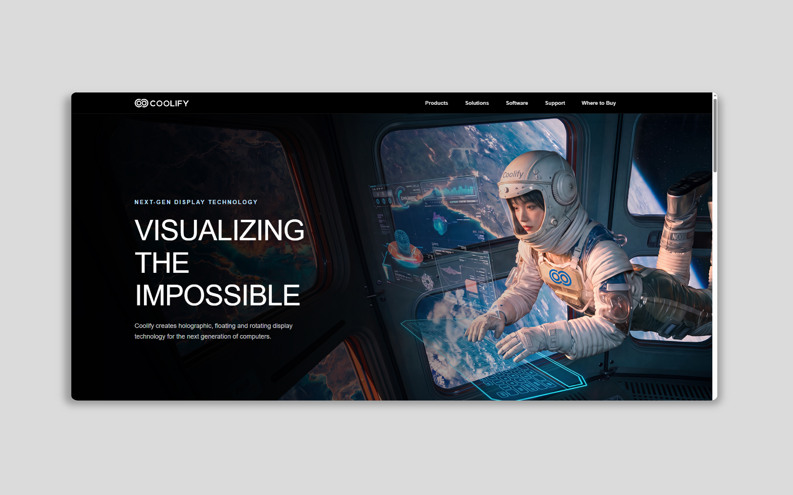

01 / 07

COOLIFY
Coolify 全息散熱｜品牌官網Coolify Holographic Cooling — brand site
WordPress 客製化開發，沒有使用任何 WordPress 的編輯器。純手寫 HTML、CSS、JS，再轉成 PHP 透過外掛上傳至 WordPress，能夠不受限制地跟設計稿幾乎一樣，更有效率地製作好每一頁。 Custom WordPress development built without any visual builders. Hand-coded in HTML, CSS, and JS before being converted to PHP, allowing the final product to match the design flawlessly without creative restrictions, while maintaining high development efficiency.
- MY ROLE
- 前端開發Front-end 互動設計Interaction Design 前端重構Front-end Refactoring 後台教育訓練CMS Training CMS 建置CMS Build